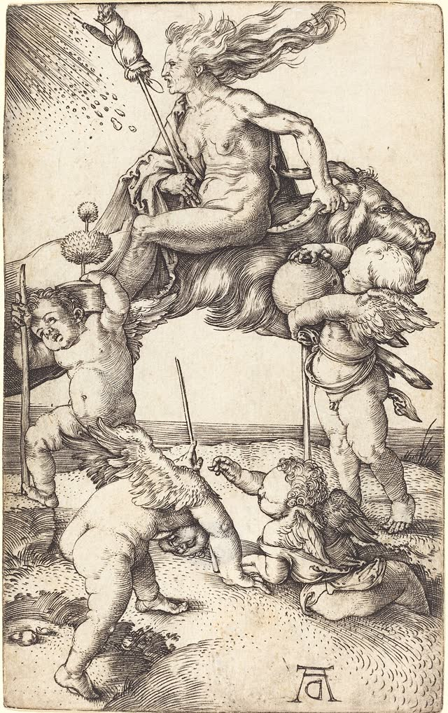
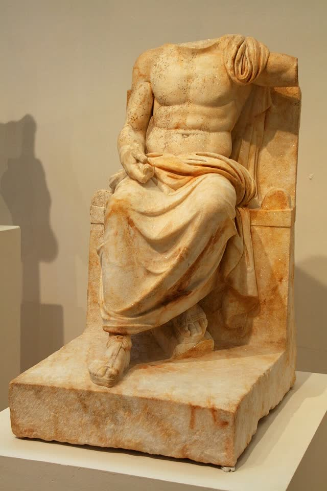

Start anywhere
What do you want to understand?
A match is a way in, not evidence of a shared history. An empty search means we have not coded that subject here.
ChapterOdinPublic domain · Reference art — not evidence

ChapterWitchcraftCC0 · Reference art — not evidence
ChapterThe godsPublic domain · Reference art — not evidenceAncestors and spiritsWhat we have The idea ancestor relations, also called ancestor veneration and ancestor worship.What we don't know No page of its own. No dated event. No picture is stored.Shamanism, nature, altered statesWhat we have Trance-centered healing, Amazonian ayahuasca traditions, and ayahuasca.What we don't know No catalog entry is titled shamanism. No picture is stored.Unexplained experiencesWhat we have Open questions on file, each with a limit on what it must not conclude.What we don't know The word unexplained is not in the catalog. No picture is stored.
Filters, examples, and how to read a result
Try Odin, afterlife, ancestor offering, psychedelic healing, sun deity, divination or nature spirits. A result is a record we can open. It is not, by itself, a shared history.
Results